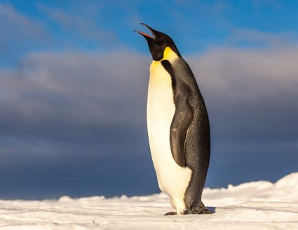

The Emperor Penguin!
Emperor penguins are the largest penguin species, standing up to 4 feet tall. They are known for their remarkable endurance, as they trek across Antarctica's icy landscape during the breeding season to form large colonies. Males incubate the eggs by balancing them on their feet under a brood pouch while females hunt for food in the ocean. These penguins can dive to depths of over 1,500 feet, using their strong flippers to swim in search of fish and krill, making them exceptional divers among birds.

l